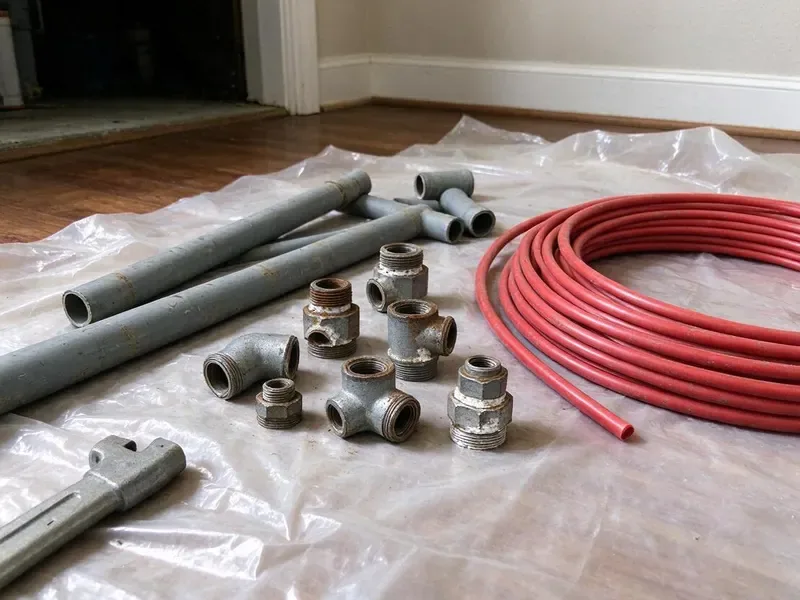

Water Line Replacement in Fresno, CA
Dealing with a leaking or burst main water line in Fresno, CA can be a serious hassle. FBL Plumbing offers expert water line replacement services to restore your home's water supply quickly and efficiently.
- Lasting Solutions
- Accurate Leak Location Service
- Fast Service Available
- Trenchless Pull Options

Trusted Water Line Replacement Solutions in Fresno, CA.
We locate the leak first so you know precisely what needs replacing.
Expert Water Line Replacement in Fresno, CA
FBL Plumbing handles every step of a main water line replacement, from calling 811 to mark utilities to trenching or pulling new pipe and restoring the yard. We also install a new main shutoff and pressure regulator if needed.
Our expertise includes:
- Copper, PEX, and PVC water line installation
- Main water line excavation and replacement
- Trenchless water line replacement techniques

Additional Plumbing Replacement Services in Fresno, CA
When repairs are no longer enough, our replacement services in Fresno, CA deliver durable upgrades that restore full performance.


Customers
Why Choose FBL Plumbing for Water Line Replacement in Fresno, CA?
We prioritize accurate diagnostics to determine if repair or full replacement is truly needed. Our water line replacement services are performed by licensed plumbers who understand local codes and the value of a reliable main water supply.
- Quality Materials, We use only high-grade, corrosion-resistant materials like copper and PEX, ensuring your new water line will last for decades.
- Minimally Invasive, We offer trenchless water line replacement options to minimize disruption to your yard and landscaping whenever possible.
- Confirmed Leaks, We locate leaks with acoustic and pressure testing before digging.
Citywide Coverage
Whether your meter is at the curb or across a long driveway, we serve properties throughout Fresno. We plan routes to minimize damage to landscaping and hardscape.
Experienced Team
Our team uses leak detection equipment and trenchless tools regularly. That experience helps us choose the best method for each property.
Safety-First Approach
We take every precaution to protect your property and our crew during water line replacement. From proper utility locates to meticulous backfilling, FBL Plumbing guarantees a safe and compliant process, giving you peace of mind.
Trusted Certified Fresno Plumbing Services Professionals
At FBL Plumbing, we take pride in providing licensed, certified plumbing services throughout Fresno, CA. Backed by recognized industry credentials, our experienced plumbers combine technical skill with genuine customer care. Whether it is repair, installation, or maintenance, we follow strict safety and quality standards to deliver long-lasting results you can trust.
Call Us Now PHCC Plumbing Contractor Recognition
PHCC Plumbing Contractor Recognition Better Business Bureau (BBB) Accreditation
Better Business Bureau (BBB) Accreditation Angi Certified Pro
Angi Certified Pro ISO 9001 Quality Management Certification
ISO 9001 Quality Management CertificationReliable Water Line Replacement Services in Fresno, CA
Main Water Line Repair vs. Replacement in Fresno
Deciding between repair and full replacement depends on the extent of the damage. If your main water line in Fresno has multiple leaks, severe corrosion, or is nearing the end of its lifespan, replacement is often the more sensible long-term solution. Our technicians will perform a complete inspection, including pressure testing and possibly video inspection, to recommend the best course of action. We consider factors like the age of your home, the material of the existing pipe, and the nature of the damage before making a recommendation.

Traditional Water Line Excavation in Fresno
Sometimes, traditional open-trench excavation is the most practical method for water line replacement in Fresno, especially for severe damage, complex pipe layouts, or when the existing pipe material is incompatible with trenchless techniques. Our team carefully excavates the area, removes the old pipe, and installs a new, high-quality main water line, typically using copper or PEX. We ensure proper grading and compaction of the soil during backfilling to avoid future issues.
Commercial Water Service Replacement in Fresno
Commercial properties often have larger service lines and backflow assemblies. We replace commercial water lines and coordinate with the utility when needed. We schedule work to limit disruption to tenants and customers. Backflow devices are tested and certified. We handle permits and inspections.
Main Water Line Replacement in Fresno
The main water line is the primary pipe delivering water from the municipal supply to your home. When this critical line fails due to age, shifting soil, or severe leaks, a full replacement is often the most cost-effective long-term solution. We carefully excavate, remove the old line, and install new, durable piping, ensuring proper connection to your home's plumbing system and the city's main.
Copper Water Line Installation in Fresno
Copper has long been a preferred material for water lines due to its durability, corrosion resistance, and longevity. FBL Plumbing specializes in installing new copper water lines, known for their ability to withstand high water pressure and limit bacterial growth. While a higher upfront investment, copper provides a dependable and long-lasting water supply system, a great choice for many homes in Fresno, CA.
Trenchless Water Line Replacement in Fresno, CA
For homeowners seeking to minimize disruption to their landscaping, trenchless water line replacement offers an effective alternative. Using pipe bursting or pipe pulling techniques, we can install a new water line with minimal excavation, typically requiring only two small access points. This method is ideal for properties in Fresno with mature trees, detailed landscaping, or concrete driveways, saving time and restoration costs.
Commercial Water Line Replacement in Fresno
Beyond residential services, FBL Plumbing also provides robust commercial water line replacement in Fresno. Businesses, schools, and industrial facilities rely on strong, steady water service. We handle larger diameter pipes and more complex installations, ensuring minimal downtime for your operations. Our commercial services are matched to meet the specific demands and codes for various business types, utilizing durable materials designed for heavy usage.

Copper Service Line Installation in Fresno, CA
Type K copper is a durable option for underground water lines. It resists punctures and lasts for decades. Copper costs more than PEX but is preferred by some homeowners. We install copper with proper bedding to protect it. We can also install sleeves where it passes through foundations.
Water Line Replacement Near Me in Fresno, CA
Local plumbers understand the soil and common service line layouts in Fresno. We plan replacements to minimize damage and restore your yard. Call us for a clear estimate.
When you search for 'water line replacement near me' in Fresno, CA, FBL Plumbing is your trusted local expert. We have deep roots in the community and a strong understanding of the local infrastructure and common plumbing issues affecting homes in this area. Our prompt service means we can quickly dispatch a team to your location, often providing same-day assessments for urgent situations.
FBL Plumbing at a Glance
- Licensed and insured plumbers serving Fresno, CA
- Same-day appointments and 24/7 emergency response
- Upfront, flat-rate pricing before work begins
- 4.8-star rated by 834+ Northern California customers
Fresno Map
Fresno Information
- Population
- 545,716
- Area codes
- 559/209/661
- Service area
- Fresno and communities within 40 miles
- Nearby
- Clovis, Madera, Hanford, Visalia
Ground movement puts constant stress on buried pipe, so robust and properly installed water lines are crucial for homes in Fresno, CA to prevent leaks and costly damage.
Expert Services
Trust our professionals for reliable FBL Plumbing solutions in Fresno, CA.
Our Specialized Plumbing Services in Fresno, CA
At FBL Plumbing, we provide a complete range of plumbing services across Fresno, CA. From leak detection to full system installations, our team ensures fast, precise, and affordable service for both residential and commercial properties. Explore our core services below:


How Our Water Line Replacement Process Works in Fresno, CA
We follow a consistent, systematic approach for every water line replacement project in Fresno, from initial assessment to final inspection.
Request a Quote
Call (669) 319-2034 and tell us about your symptoms. We schedule leak detection and inspection.
Locate and Plan
We verify the leak and mark utilities. We choose trenching or trenchless replacement.
Replace and Restore
We install the new line, test for leaks and repair the yard. We confirm pressure at your fixtures.
Frequently Asked Questions About Water Line Replacement in Fresno
The cost of water line replacement in Fresno can vary significantly based on factors like pipe material (copper vs. PEX), length of the line, depth, and whether trenchless methods are used. Typically, homeowners can expect to pay anywhere from $3,000 to $15,000 or more for a complete main water line replacement. We provide a detailed, upfront estimate after an on-site assessment.
A newly installed copper water line can last 50 to 70 years or even longer. PEX water lines are also very long-lived, with an expected lifespan of 40 to 50 years. The longevity depends on factors like water quality, soil conditions in Fresno, and the quality of the install.
While trenchless water line replacement is an excellent option for minimizing yard disruption, it's not always feasible. It depends on the existing pipe material (it works best with certain types), the extent of the damage (a collapsed pipe may prevent it), and the layout of your property. Our technicians will assess if it's a viable solution for your home.
We primarily use high-quality copper and PEX (cross-linked polyethylene) for main water line replacements due to their durability and long lifespan. Specific material choice depends on factors like soil conditions in Fresno, water chemistry, and your budget. We work with well-known brands like Mueller Industries for copper and Uponor or Viega for PEX.
We provide a written labor warranty on the installation. Pipe manufacturers also offer lengthy material warranties, often 25 years for PEX when installed by a licensed plumber.
A newly installed water line using quality materials like copper or PEX can last 50 to 100 years or even longer. Copper is known for its exceptional longevity, while PEX typically has a manufacturer's warranty of 25 years but can last much longer. Regular maintenance and stable ground conditions contribute to a longer lifespan.
Most residential replacements take one to two days. Bigger properties may take longer.
Key indicators include a sudden, unexplained drop in water pressure throughout your home, discolored water (rust or dirt particles), consistently wet spots in your yard that aren't explained by rain, or a surprisingly high water bill with no change in usage. Multiple leaks or very old, corroded pipes also point to replacement.
What People Are Saying About Our Plumbing Experts?

Emily R.
I called FBL Plumbing for plumbing repair, and the technician was fast, polite, and thorough. They explained the problem clearly and fixed it the same day. I will definitely hire them again. Highly recommended!
Plumbing Repair · Visalia, CA
Sofia M.
Two new toilets installed in one visit, no mess left behind, and the tech even adjusted a faucet he noticed was dripping. Fair pricing and really friendly.
Toilet Installation · Clovis, CA
Daniel K.
A pipe burst at 11 pm and they actually answered. The plumber showed up within the hour, shut everything down, and had us back to normal the next morning. Could not ask for more.
Emergency Plumbing · Fresno, CA
James P.
Our commercial plumbing system had a leak under the sink, and FBL Plumbing handled it professionally. The plumbers arrived quickly and restored everything without disruption to our customers.
Commercial Plumbing · Hanford, CA
Mark T.
When our office needed drain cleaning, FBL Plumbing provided quick, reliable service. The plumber arrived on time and made sure every drain flowed perfectly before leaving. Very satisfied.
Drain Cleaning · Clovis, CA
Patricia H.
We had a slab leak that two other companies could not find. FBL Plumbing located it in under an hour, explained our options, and the price matched the quote to the dollar.
Slab Leak Repair · Clovis, CA